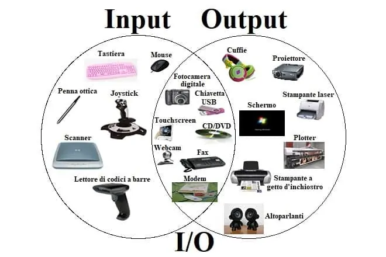

SISTEMI OPERATIVI
CHE COSA SONO I SISTEMI OPERATIVI

I sistemi operativi in informatica sono complessi software che fungono da intermediari
tra gli utenti e l'hardware di un computer. Essenzialmente, coordinano le risorse del sistema, consentendo ai programmi di eseguire operazioni e interagire con l'hardware. Questi sistemi gestiscono le attività di base come l'avvio del computer, la gestione della memoria, l'accesso ai dispositivi di archiviazione e la gestione dei processi.
I sistemi operativi forniscono un'interfaccia utente, che può essere grafica o a riga di comando, attraverso cui gli utenti possono
interagire con il computer. Gestiscono anche le operazioni di input/output, consentendo agli utenti di utilizzare dispositivi come tastiere,
mouse e stampanti. Inoltre, i sistemi operativi supportano la multitasking, consentendo l'esecuzione simultanea di più programmi.
Uno degli aspetti cruciali dei sistemi operativi è la loro capacità di gestire i file e le directory, organizzando e consentendo l'accesso
a dati su dispositivi di archiviazione come dischi rigidi e unità flash. I sistemi operativi sono progettati anche per garantire la sicurezza del sistema, proteggendo i dati dagli accessi non autorizzati e gestendo le autorizzazioni degli utenti.
Alcuni sistemi operativi noti includono Windows, macOS, Linux e Android, ciascuno con le proprie caratteristiche e funzionalità uniche.
Nel contesto dell'informatica moderna, i sistemi operativi sono fondamentali per garantire un'esperienza utente fluida e efficiente
su una vasta gamma di dispositivi, dai computer desktop ai dispositivi mobili.
IL SISTEMA OPERATIVO IMPORTANTE E UTILIZZATO DAL MONDO WINDOWS

Windows è una famiglia di sistemi operativi sviluppati da Microsoft Corporation. Windows 10 è l'ultima versione ufficiale rilasciata, tuttavia, non esiste una versione ufficiale di Windows chiamata "Windows 9". Questo perché Microsoft ha saltato direttamente dalla versione Windows 8.1 a Windows 10.
Windows 10, lanciato nel luglio 2015, ha introdotto molte nuove funzionalità, inclusa un'interfaccia utente migliorata, un menu Start rinnovato, Cortana, l'assistente digitale di Microsoft, e una maggiore integrazione con servizi online come OneDrive. Ha anche introdotto il concetto di Windows as a Service (Windows come servizio), che implica aggiornamenti regolari e continui per migliorare la sicurezza e l'esperienza dell'utente.
Una delle caratteristiche distintive di Windows 10 è la sua capacità di funzionare su una vasta gamma di dispositivi, inclusi computer desktop, laptop, tablet, e dispositivi ibridi come i 2-in-1. Windows 10 è stato progettato per unire l'esperienza utente tra tutti questi dispositivi, consentendo una transizione fluida da un dispositivo all'altro.
È importante notare che le informazioni sulle versioni dei sistemi operativi potrebbero essere cambiate dopo la mia ultima aggiornamento a settembre 2021. Ti consiglio di verificare le fonti più recenti per le ultime notizie sui sistemi operativi Windows.
I DISPOSITIVI INPU E OUTPUT

DISPOSITIVI INPUT
I dispositivi di input sono essenziali per interagire con computer e dispositivi elettronici. La tastiera consente l'inserimento di testo e comandi, mentre il mouse controlla il cursore su schermo con movimenti precisi e clic. I touchpad, comuni nei laptop, permettono un controllo tattile del cursore. Gli schermi touchscreen consentono interazioni dirette toccando l'interfaccia. Le penne stilo sono utilizzate per scrivere e disegnare su schermi sensibili. I scanner convertono documenti cartacei in formati digitali. Altri dispositivi includono trackball e joystick, utilizzati in applicazioni specifiche o giochi. Microfoni traducono suoni in segnali digitali, ideali per comandi vocali. Webcam e telecamere catturano video e immagini. I sensori di movimento, come giroscopi e accelerometri, sono presenti in dispositivi come smartphone per rilevare l'orientamento.
Questi dispositivi di input sono fondamentali per rendere l'interazione uomo-macchina fluida e intuitiva in una varietà di contesti e applicazioni.
DISPOSITIVI OUTPUT
L'output nei dispositivi elettronici si presenta in varie forme. Il risultato visivo appare sui monitor o schermi, mostrando testo, immagini e video. L'audio viene riprodotto tramite altoparlanti o cuffie, consentendo la fruizione di suoni, musica o effetti sonori. Le stampanti trasformano dati digitali in documenti fisici. Oltre all'output visivo e uditivo, esistono feedback tattili come la vibrazione nei telefoni che forniscono sensazioni tattili agli utenti. L'output può anche includere dati sensoriali, come lettura di temperatura o umidità da sensori. Nei contesti industriali, l'output può essere sotto forma di segnali luminosi o avvisi sonori. Altre forme di output includono proiettori per visualizzazioni su larga scala e dispositivi Braille per utenti
con disabilità visive. Questa varietà di output consente una comunicazione ricca e interattiva tra gli utenti e la tecnologia.
CONTTATAMI
Per sapere di piu scrivi su matteobarcellona31@gmail.com